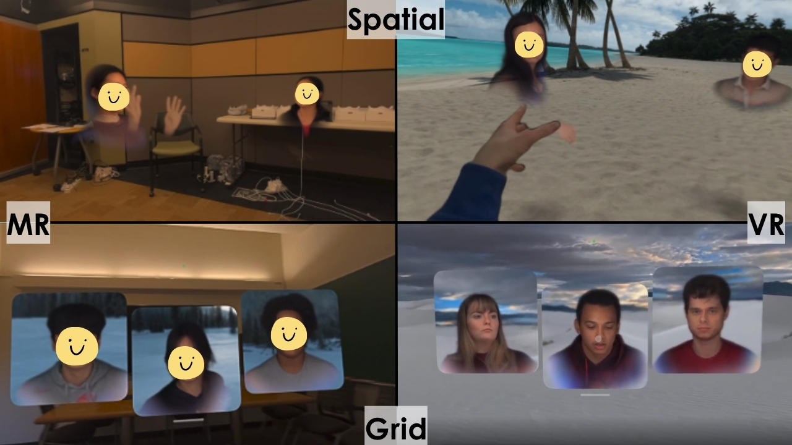

Stanford Virtual Human Interaction Lab (VHIL) · Honors Research
Honors Thesis
The Impact of Spatiality and Modality on Group Communications in Extended Reality Teleconferencing

01 · The Question
What We Wanted to Know
Products like Zoom and Microsoft Teams often assume that making teleconferencing feel more like real-life conversations is an automatic improvement.
Working with Stanford's Virtual Human Interaction Lab (VHIL), I set out to test that assumption. Using the fully-tracked photorealistic avatars ('Personas') possible on the Apple Vision Pro, we brought groups of 2, 3, and 4 people into spatial FaceTime calls to see how two major design choices affect group communication: arranging people in 3D space versus a traditional 2D grid, and meeting in mixed-reality passthrough versus a fully virtual environment.
02 · My Contribution
Running the Study
In my senior year, I led this project from its initial idea to the finished paper. Taking over 12 months, it was easily the most challenging thing I did during my time at Stanford, but also the most rewarding.
I wrote the session protocols, designed our data scheme, recruited 133 participants, and trained five research assistants to assist in getting participants set up. I ran every participant session myself, guiding groups through calibrating their headsets, creating their Apple Vision Pro Personas, and walking them through a verbal exercise in their assigned FaceTime condition.
Our data sources included questionnaires, audio transcripts of participant conversations, room video, and first-person video from inside the headsets. I wrote custom scripts in Python to extract and clean our video data, and scripts in R for analysis. The finished thesis fulfilled my Honors requirement for Symbolic Systems, and is the foundation for an upcoming publication from the lab.


03 · Findings
Why It Matters for Product Design
Our findings challenged the idea that more immersion is always better. When people are already navigating an unfamiliar medium like VR, forcing them into a novel 3D spatial arrangement can result in more social friction than the familiar 2D grid.
From the Paper
“For developers and enterprise adopters of XR teleconferencing, these findings necessitate a critical re-evaluation of design priorities. The current industry trajectory assumes that maximizing spatial realism and environmental immersion results in better collaborative experiences. However, the data reveal that spatial configurations do not automatically mitigate the cognitive or physical toll of remote interactions. In practice, forcing users into three-dimensional spatial arrangements may actually increase social friction compared to standard grid layouts. Teleconferencing platforms should reconsider the push to deprecate traditional two-dimensional grid views, as these structures provide a safe, established social boundary that users may prefer when navigating the complexities of multi-person interactions in less familiar modalities like VR.”
04 · Deliverables